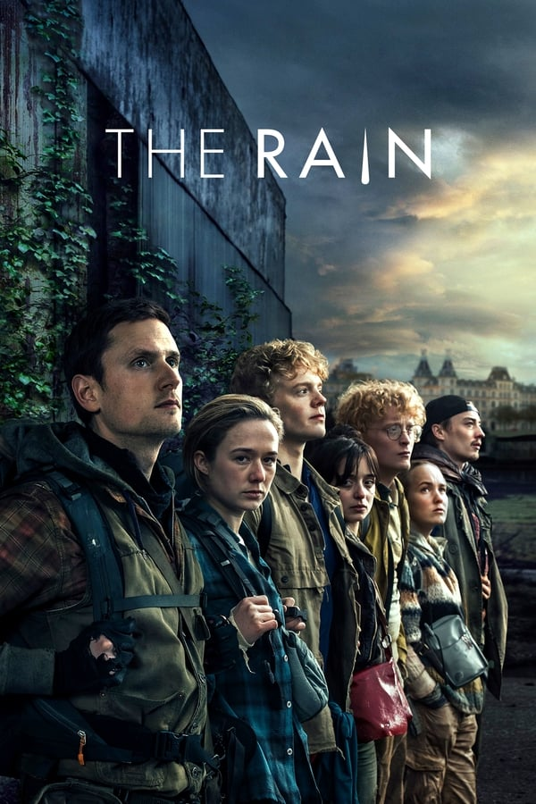
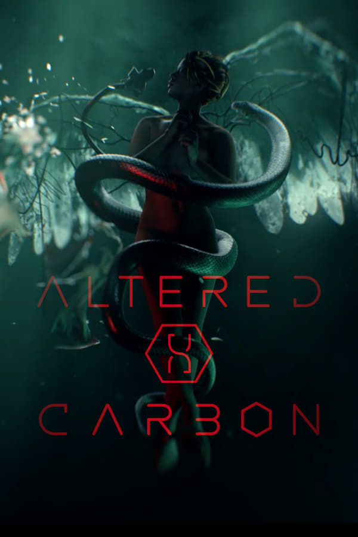

2016 | 16 | 3 temporadas | Séries dos EUA
Quando um garoto desaparece, a cidade toda participa nas buscas. Mas o que encontram são segredos, forças sobrenaturais e uma menina.
Filmes e séries relacionadas






Arraste para direita para ver o resto da lista